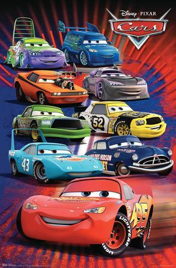

Favorite Film |
||
|---|---|---|
Film |
Tentang |
Trailer |
 Transformers |
Transformers adalah film fiksi ilmiah Amerika yang diangkat dari kisah Transformers tahun 1984. Film ini memadukan CGI dengan laga hidup. Disutradarai oleh Michael Bay. Slogan film ini sangat terkenal, yaitu "Their war, our world." yang berarti "Perang mereka, dunia kami".Remaja muda Sam Witwicky terlibat dalam perjuangan kuno antara dua faksi makhluk luar angkasa untuk mengubah robot - Autobots yang heroik dan Decepticons yang jahat. Sam memegang petunjuk tentang kekuatan yang tak terbayangkan dan Decepticons tidak akan berhenti untuk mendapatkannya kembali. |
|
Cars |
Cars adalah sebuah film animasi yang diproduksi Pixar Animation Studios dan dirilis oleh Walt Disney Pictures pada 9 Juni 2006. Film ini disutradarai oleh John Lasseter yang juga menangani film Toy Story, A Bug's Life, dan Toy Story 2 dengan pengisi suara antara lain Owen Wilson, Bonnie Hunt, Paul Newman, dan Tony Shalhoub.Lightning McQueen, mobil balap pemula jagoan yang dikemudikan untuk sukses, menemukan bahwa hidup adalah tentang perjalanan, bukan garis finis, ketika dia tiba-tiba menemukan dirinya berbelok di kota Route 66 yang sepi di Radiator Springs. Dalam perjalanan melintasi negara menuju Kejuaraan Piala Piston besar di California untuk bersaing dengan dua profesional berpengalaman, McQueen mengenal karakter kota yang tidak biasa. |